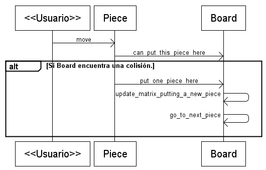

Esta etapa tiene 2 grandes cambios, se generan las piezas restantes y se implementa la colisión entre las piezas que han tocado el suelo y la que controla el usuario.
Cada una de las piezas tiene su Mapa de colisiones en el directorio mask.
Para implementar el resto de las piezas solo se debe crear una imagen y un mapa de colisión para cada pieza.
Este es el contenido del directorio mask:
Internamente la pieza tiene una estructura de colisiones que podría colisionar con alguna pieza en reposo dentro del tablero.
Esta situación de colisión se verifica por parte del objeto Board. Este objeto tiene una mapa completo de todas las piezas en reposo, y cuando una pieza le consulta, si puede ocupar una parte del escenario, Board recibe el mapa de la pieza y analiza posición a posición.
En esta etapa se agrega un nuevo mensaje de intercambio entre las dos clases, cuando la pieza se suelta, el tablero recibe la orden de ocupar parte del escenario con los datos de la pieza.
Este es un diagrama que refleja este intercambio de mensajes entre ambos objetos:
Si bien el objeto Board tiene una matriz con información de todos los bloques ocupados y libres. También necesita una superficie visual en donde se pueda observar las piezas en reposo.
Este criterio es parecido al que se utiliza en las piezas, aquí el tablero tiene dos estructuras de datos: una matriz con información invisible de las colisiones y una superficie que refleja esa matriz pero visualmente.
El atributo que representa el aspecto visual de las piezas que reposan es Board.visual_matrix. Este atributo señala a una superficie que inicialmente es transparente, pero se dibuja sobre ella conforme se deja reposar alguna pieza.